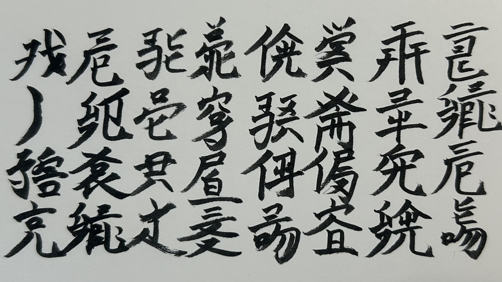
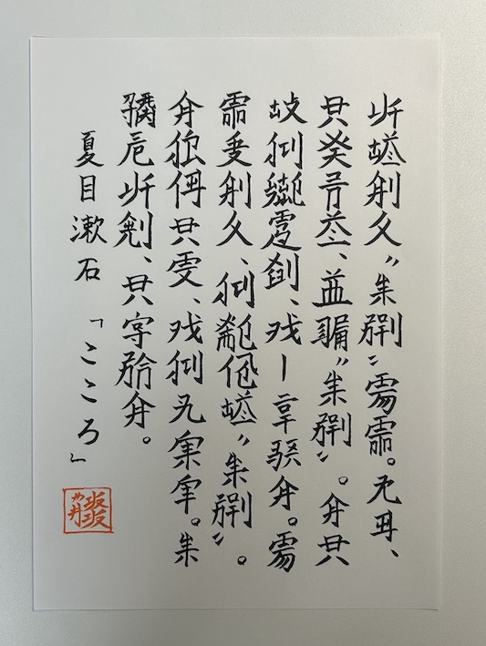
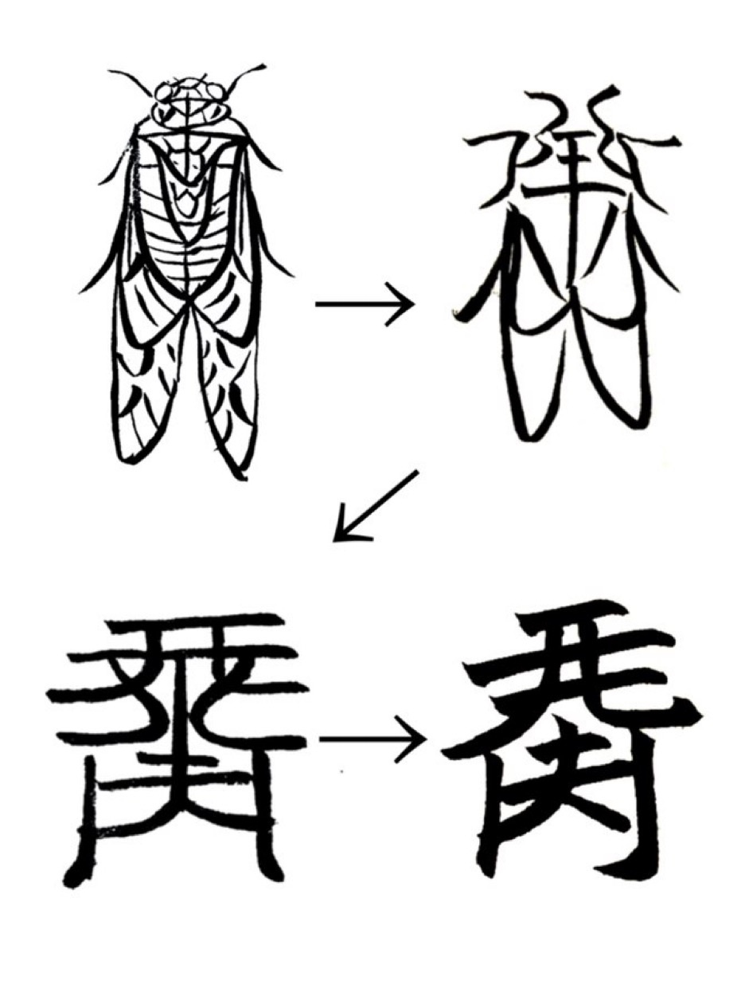
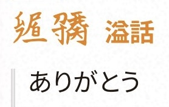
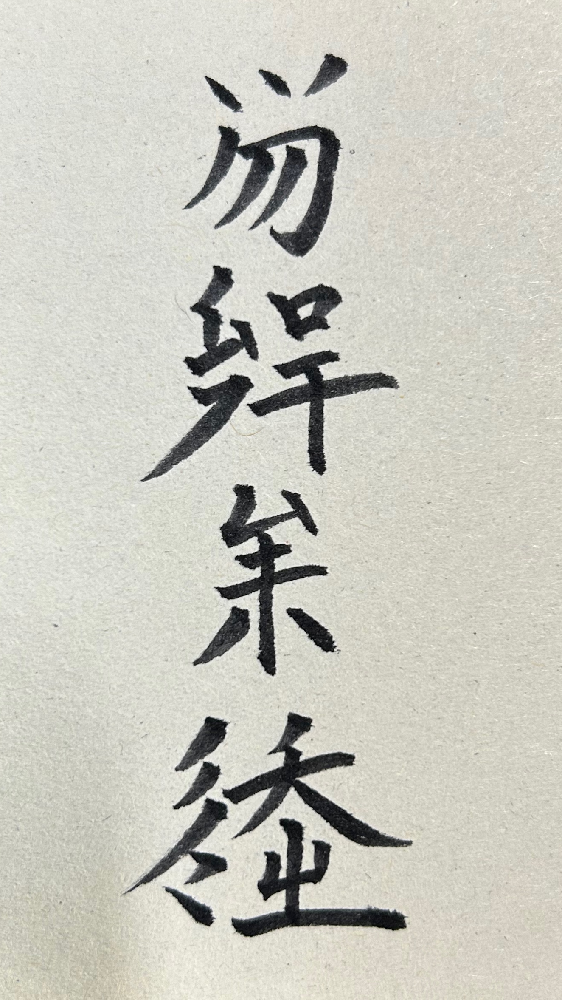
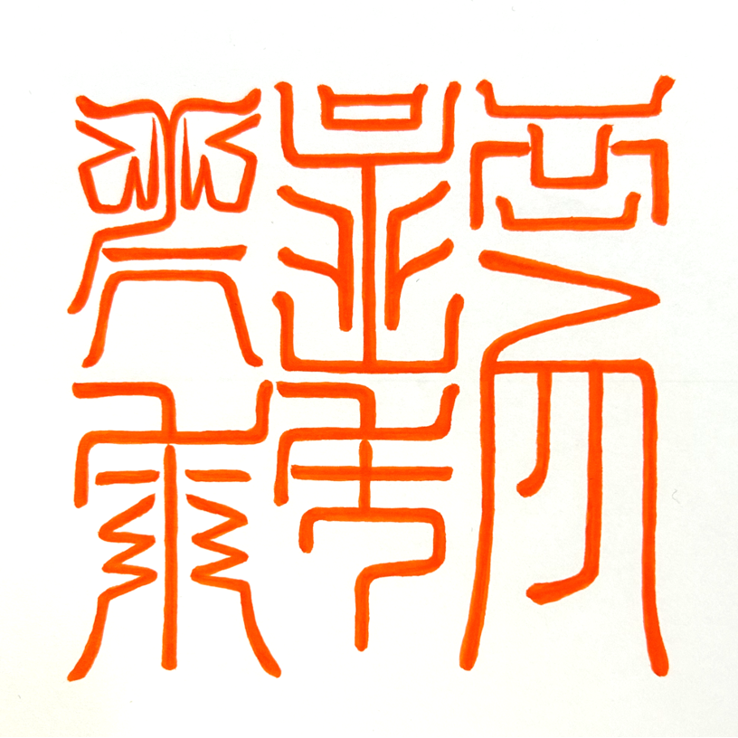
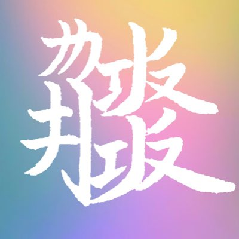

Ruwish is a constructed language that I have been creating since August 2020.
Ruwish has no pronunciation. It has no spoken form, and every word is written only with ideographic characters. There are currently about 1,100 characters, and each one is built by combining several components, much like Chinese characters.
Grammatically, Ruwish is an isolating language: words never change their form. The basic word order is subject–verb–object (SVO), and adjectives come before the nouns they describe.
Gallery






Status
Vocabulary
1,617 words
Entries in the ZpDIC Ruwish Dictionary
Last updated
2026.10.11
Grammar (in Japanese)
Dictionary
Author

RUI